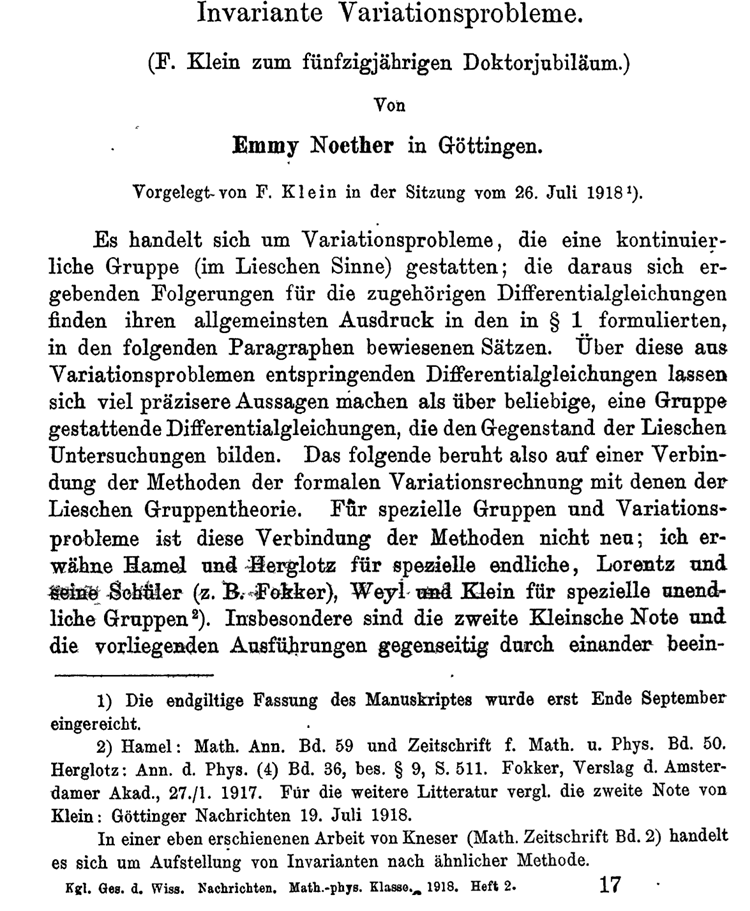

In the summer of 1918, Emmy Noether published the theorem that now bears her name, establishing a profound two-way connection between symmetries and conservation laws. The influence of this insight is pervasive in physics; it underlies all of our theories of the fundamental interactions and gives meaning to conservation laws that elevates them beyond useful empirical rules. Noether’s papers,
lectures, and personal interactions with students and colleagues drove the development of abstract algebra, establishing her in the pantheon of twentieth-century mathematicians. This essay traces her path from Erlangen through Göttingen to a brief but happy exile at Bryn Mawr College in Pennsylvania, illustrating the importance of “Noether’s Theorem” for the way we think today. The text draws on a colloquium presented at Fermilab on 15 August 2018.
1918年の夏、エミー・ネーターは現在彼女の名を冠する定理を発表し、対称性と保存則の間に深い双方向の関係を確立しました。この洞察の影響は物理学全体に及んでおり、基本的な相互作用に関するあらゆる理論の根底にあり、保存則に単なる有用な経験則を超えた意味を与えています。ネーターの論文、講義、そして学生や同僚との個人的な交流は抽象代数学の発展を促し、彼女を20世紀の数学者の殿堂入りさせました。本稿では、エアランゲンからゲッティンゲンを経て、ペンシルベニア州のブリンマー大学での短期間ながらも充実した滞在に至るまでの彼女の歩みをたどり、「ネーターの定理」が現代の思考様式にとってどれほど重要であるかを明らかにします。本文は、2018年8月15日にフェルミ国立加速器研究所で開催されたコロキウムに基づいています。
On the twenty-sixth of July in 1918, Felix Klein gave a presen-tation to the Royal Academy of Sciences in Göttingen1. The paper he read had been dedicated to him on the occasion of his Golden Doctorate, the fiftieth anniversary of his Ph.D., by a young colleague named Emmy Noether. The centennial of this paper 2, which contains two theorems that have had an extraordinary impact on physics, including particle physics, for a hundred years, provides the occasion
for this commemoration.
1918年7月26日、フェリックス・クラインはゲッティンゲン王立科学アカデミーで講演を行った1。彼が発表した論文は、博士号取得50周年、すなわち金博士号授与を記念して、若い同僚のエミー・ネーターによって彼に捧げられたものだった。この論文2には、素粒子物理学を含む物理学に100年もの間、計り知れない影響を与えてきた2つの定理が含まれており、今回の記念行事はその発表100周年を記念するものである。
1 Felix Klein is known to popular scientific culture for his conception of the Klein surface (Fläche)—mistranslated as the Klein bottle (Flasche).
フェリックス・クラインは、クライン面（Fläche）の概念を提唱したことで、一般の科学文化においてよく知られている。この概念は、クラインの壺（Flasche）と誤訳されることが多い。
2 Emmy Noether. Invariante Variationsprobleme. Gott. Nachr., pages 235–257,1918. http://bit.ly/2GQyfsm; and Invariant Variational Problems. In
Yvette Kosmann-Schwarzbach and Bertram E. Schwarzbach, editors, The
Noether Theorems: Invariance and Conservation Laws in the Twentieth Century,
pages 3–22. Springer, New York, 2011.
doi: 10.1007/978-0-387-87868-3_1
エミー・ネーター「不変変分問題」『神学紀要』235-257頁、1918年。http://bit.ly/2GQyfsm；および「不変変分問題」イヴェット・コスマン＝シュヴァルツバッハおよびバートラム・E・シュヴァルツバッハ編『ネーターの定理：20世紀における不変性と保存則』3-22頁。シュプリンガー、ニューヨーク、2011年。doi: 10.1007/978-0-387-87868-3_1
It was a busy week in Göttingen, and especially for Felix Klein. Not only was he celebrating his Doktorjubiläum, he had given a paper3 of his own the week before explaining how he and David Hilbert were coming to terms with the idea of energy conservation in Einstein’s General Theory of Relativity. They were puzzling over an observation that within the General Theory, what normally is a con-straint of energy conservation appears as an identity. How then could it constrain anything? This was the problem on which he had asked Emmy Noether’s help. Hilbert is revered among mathematicians for the twenty-three problems4 he posed in 1900 and known to physi-cists for the Courant–Hilbert tomes on methods of mathematical physics.
ゲッティンゲンでは忙しい一週間だったが、特にフェリックス・クラインにとってはそうだった。彼は博士号取得記念日を祝っていただけでなく、その前の週には、彼とデイヴィッド・ヒルベルトがアインシュタインの一般相対性理論におけるエネルギー保存の概念をどのように理解したかを説明する論文3を発表していた。彼らは、一般理論の中では、通常はエネルギー保存の制約であるものが恒等式として現れるという観察に頭を悩ませていた。それでは、それはどのようにして何かを制約できるのだろうか？これが彼がエミー・ネーターに助けを求めた問題だった。ヒルベルトは、1900年に彼が提起した23の問題4で数学者の間で尊敬されており、物理学者には数理物理学の方法に関するクーラント＝ヒルベルトの著書で知られている。
3 F. Klein. Über die Differentialgesetze
für die Erhaltung von Impuls und Energie in der Einsteinschen Gravitationstheorie. Königliche Gesellschaft der Wissenschaften zu Göttingen. Mathematischphysikalische Klasse. Nachrichten, pages
171–189, 1918. http://bit.ly/2VsEnKK.
F. クライン。「アインシュタインの重力理論における運動量とエネルギー保存の微分法則について」。ゲッティンゲン王立科学協会。数学物理学部門。議事録、171～189ページ、1918年。http://bit.ly/2VsEnKK
4 David Hilbert. Mathematical
problems. Bull. Amer. Math.
Soc., 8:437–479, 1902. doi:
10.1090/S0002-9904-1902-00923-3.
Translated from Göttinger Nachrichten,
1900, pp. 253-297; Archiv der Mathernatik und Physik, 3d ser., vol. 1 (1901),
pp. 44-63 and 213-237.
ダーヴィッド・ヒルベルト。数学的
問題。ブル。アメル。数学。
Soc.、8:437–479、1902。
10.1090/S0002-9904-1902-00923-3。
ゲッティンガー・ナハリヒテンからの翻訳、
1900 年、253 ～ 297 ページ。マテルナティックと物理学アーカイブ、第 3 シリーズ、vol. 1 (1901)、
44 ～ 63 および 213 ～ 237 ページ。
A few days later, on July 23, Emmy Noether summarized the con-tent of her two theorems before the German Mathematical Society. As a young person—and a woman—she did not have the standing to speak for herself in sessions of the Royal Academy. Thus did Felix Klein report her results. The title page of the paper he read (Figure 1) reveals Noether’s interesting approach: She combines the notions of the calculus of variations (or the Euler–Lagrange equations, in more technical terms) with the theory of groups to explore what can you extract from a differential equation subjected to constraints of sym-metries. Her principal results can be stated in two theorems5:
数日後の7月23日、エミー・ネーターはドイツ数学会で自身の2つの定理の内容を要約した。若く、しかも女性であった彼女には、王立アカデミーの会合で自ら発言する資格はなかった。そこでフェリックス・クラインが彼女の研究成果を報告した。彼が読み上げた論文の表題ページ（図1）には、ネーターの興味深いアプローチが示されている。彼女は変分法（より専門的に言えばオイラー・ラグランジュ方程式）の概念と群論を組み合わせ、対称性の制約を受けた微分方程式から何を抽出できるかを探求している。彼女の主な成果は、2つの定理5にまとめられる。

5 Summary of Emmy Noether’s report to the German Mathematics
Club, Jahresbericht der Deutschen Mathematiker-Vereinigung Mitteilungen und Nachrichten vol 27, part 2, p.47 (1918).
エミー・ネーターによるドイツ数学クラブへの報告の要約、ドイツ数学会年次報告、通信とニュース、第27巻、第2部、p.47（1918年）。
What are the implications of these propositions? Theorem I in-cludes all the known theorems in mechanics concerning the first integrals, including the familiar conservation laws6 shown in Table 1. Interestingly, examples of relationships such as these were actually known in special cases before Noether’s work. Theorem II, which implies differential identities, may be described as the maximal gen-eralization in group theory of “general relativity.”
これらの命題が意味するところは何でしょうか？定理 I は、表1に示すおなじみの保存則6を含む、力学における第一積分に関する既知の定理をすべて包含しています。興味深いことに、このような関係の例は、ネーターの研究以前にも特殊なケースでは実際に知られていました。微分恒等式を導く定理 II は、群論における「一般相対性理論」の最大限の一般化と表現できます。
6 A skeletal but useful reference is E. L. Hill. Hamilton’s principle and the conservation theorems of mathematical physics. Rev. Mod. Phys., 23:253–260, 1951. doi: 10.1103/RevModPhys.23.253
簡潔ながらも有用な参考文献として、E. L. Hill著「ハミルトンの原理と数理物理学の保存定理」Rev. Mod. Phys., 23:253–260, 1951. doi: 10.1103/RevModPhys.23.253 が挙げられる。
What is striking about the Theorems is their utter generality. You don’t have to restrict yourself to a specific equation of motion, you don’t have to stop after the first derivative, you can have as many derivatives as you want in the Lagrangian of the theory, and you can make this generalization beyond simple transformations to more complicated ones.
これらの定理の際立った点は、その極めて普遍的な性質にある。特定の運動方程式に限定する必要はなく、一次導関数で止める必要もない。理論のラグランジアンには必要なだけ導関数を含めることができ、この一般化は単純な変換にとどまらず、より複雑な変換にも適用できる。
To translate those Theorems into the language we physicists use with our students, Theorem I links a conservation law with every continuous symmetry transformation under which the Lagrangian is invariant in form. This is, from our perspective, a stunning develop-ment. Consider the conservation of energy. The science of mechanics developed step by step, often by inspired trial and error. Clever peo-ple made guesses about what might be a useful quantity to measure, what might be a constant of the motion. Even something as funda-mental as the Law of Conservation of Energy was sort of an empirical regularity. It didn’t come from anywhere, but it had been found to be a useful construct. After Noether’s Theorem I, we know that energy conservation does come from somewhere that seems rather plausi-ble: the idea that the laws of nature should be independent of time. We can derive what had appeared to be useful empirical regularities from the symmetry principles7.
これらの定理を、物理学者が学生に教える際に使う言葉に翻訳すると、定理 I は、ラグランジアンが形式的に不変であるすべての連続対称変換と保存則を結びつけます。これは、私たちの視点からすると、驚くべき発展です。エネルギー保存を考えてみましょう。力学は、しばしばひらめきに満ちた試行錯誤によって段階的に発展してきました。賢い人々は、測定するのに役立つ量、運動の定数となるものについて推測しました。エネルギー保存の法則のような基本的なものでさえ、一種の経験的規則性でした。それはどこから来たのか分かりませんでしたが、有用な構成であることが分かりました。ネーターの定理 I の後、エネルギー保存は、かなりもっともらしいと思われる場所から来ることがわかっています。それは、自然法則は時間に依存しないという考えです。対称性の原理から有用な経験的規則性と思われるものを導き出すことができます7。
7 For an example derivation, see Chapter 2 of Chris Quigg. Gauge Theories
of the Strong, Weak, and Electromagnetic
Interactions. Princeton University Press,
Princeton, second edition, 2013.
導出例については、クリス・クイッグ著『ゲージ理論：強い相互作用、弱い相互作用、電磁相互作用』第2章を参照のこと。プリンストン大学出版局、プリンストン、第2版、2013年。
The distinguished group theorist Feza Gürsey, who taught physics at Yale and at the Middle East Technical University in Ankara, was rapturous about the implications. In Nathan Jacobson’s introduction to Emmy Noether’s collected works8, Gürsey is quoted,
イェール大学とアンカラの中東工科大学で物理学を教えた著名な群論学者フェザ・ギュルセイは、その意義に熱狂した。ネイサン・ジェイコブソンによるエミー・ネーターの著作集8の序文には、ギュルセイの言葉が引用されている。
8 Emmy Noether. Gesammelte Abhandlun-gen = Collected papers. Nathan Jacobson, editor; Springer-Verlag, Berlin New York, 1983. See pages 23–25.
エミー・ネーター著『論文集』ネイサン・ジェイコブソン編、シュプリンガー・フェルラーク、ベルリン・ニューヨーク、1983年。23～25ページ参照。
Before Noether’s Theorem, the principle of conservation of energy was shrouded in mystery, leading to the obscure physical systems of Mach and Ostwald. Noether’s simple and profound mathematical formulation did much to demystify physics.
ネーターの定理以前は、エネルギー保存の法則は謎に包まれており、マッハやオストワルドといった難解な物理体系を生み出していた。ネーターの簡潔かつ深遠な数学的定式化は、物理学の難解さを解き明かす上で大きな役割を果たした。
For its part, Theorem II contains the seeds of gauge theories (“Symmetries dictate interactions”) and exhibits the kinship between general relativity (general coordinate invariance) and gauge theories. We will have more to say about the strategy of gauge theories at the end of this essay. On the way, Noether’s analysis clarified Klein and Hilbert’s issue about energy conservation in General Relativity9.
定理 II にはゲージ理論の萌芽（「対称性が相互作用を決定する」）が含まれており、一般相対性理論（一般的な座標不変性）とゲージ理論の類似性を示しています。ゲージ理論の戦略については、このエッセイの最後に詳しく述べます。その過程で、ネーターの分析は、一般相対性理論9におけるクラインとヒルベルトのエネルギー保存に関する問題を明確にしました。
9 General coordinate invariance gives rise to the Bianchi identities that cause the energy conservation law
to seem trivial. Energy conserva-tion arises from the symmetry, as explained in Katherine Brading. A Note on General Relativity, Energy Conservation, and Noether’s The-orems. Einstein Stud., 11:125–135,
2005. doi: 10.1007/0-8176-4454-7_8. The canonical modern treatment
is Richard L. Arnowitt, Stanley Deser, and Charles W. Misner. The Dynamics of General Relativity. Gen. Rel. Grav., 40:1997–2027, 2008. doi: 10.1007/s10714-008-0661-1, arXiv:gr-qc/0405109.
一般座標不変性は、エネルギー保存則を自明なものに見せるビアンキ恒等式を生み出します。
エネルギー保存則は対称性から生じます。これについては、Katherine Brading著「一般相対性理論、エネルギー保存則、およびネーターの定理に関する注記」（Einstein Stud., 11:125–135, 2005. doi: 10.1007/0-8176-4454-7_8）で説明されています。
現代における標準的な解説は、Richard L. Arnowitt、Stanley Deser、Charles W. Misner共著「一般相対性理論の力学」（Gen. Rel. Grav., 40:1997–2027, 2008. doi: 10.1007/s10714-008-0661-1, arXiv:gr-qc/0405109）です。
The person who gave us these theorems was Amalie Emmy Noether. She was called by her middle name because both her mother and her grandmother were also named Amalie. She was born on March 23, 1882 in Erlangen, a university town a bit north of Nürnberg. At the time of her birth, the population was about fifteen thousand. The most famous son of Erlangen was Georg Simon Ohm, the V = IR lawgiver, who was not only born in Erlangen but also earned his Ph.D. there. Emmy’s father, Max Noether10, was a Pro-fessor of Mathematics at the University of Erlangen from 1875. That surely influenced her development. He did algebraic geometry, the study of curves on surfaces. Max was a scholar of some distinction, elected to the Academies of Berlin, Göttingen, Munich, Budapest,
Copenhagen, Turin, Accademia dei Lincei, Institut de France, and the London Mathematical Society.
これらの定理を私たちに与えてくれたのは、アマリエ・エミー・ネーターです。彼女は、母親と祖母もアマリエという名前だったため、ミドルネームで呼ばれていました。彼女は、ニュルンベルクの少し北にある大学都市エアランゲンで、1882年3月23日に生まれました。彼女が生まれた当時、人口は約1万5千人でした。エアランゲンで最も有名な人物は、V = IR の法則を提唱したゲオルク・ジーモン・オームで、彼はエアランゲンで生まれただけでなく、そこで博士号も取得しました。エミーの父、マックス・ネーター10は、1875年からエアランゲン大学の数学教授でした。それが彼女の成長に間違いなく影響を与えました。彼は代数幾何学、つまり曲面上の曲線の研究をしていました。マックスは著名な学者であり、ベルリン、ゲッティンゲン、ミュンヘン、ブダペスト、コペンハーゲン、トリノの各アカデミー、リンチェイ・アカデミー、フランス学士院、ロンドン数学会に選出された。
10 Francis S. Macaulay. Life and work of the mathematician Max Noether (1844-1921). Proceedings of the London
Mathematical Society. - 2. ser., 21:XXXVII– XLII, 1923. doi: 10.11588/heidok. 00013182
フランシス・S・マコーレー著「数学者マックス・ネーター（1844-1921）の生涯と業績」。ロンドン数学会紀要。第2シリーズ、21巻、XXXVII-XLII、1923年。doi: 10.11588/heidok.00013182
Felix Klein, whom we have already met as the person who deliv-ered Noether’s Theorems, passed through Erlangen for three years, and he had put it on the mathematical map. In his Inaugural Ad-dress (1872), he set out a research plan to study geometry from the perspective of group theory. Until that time, the basis of geometry had been to start out with rectilinear coordinate systems. Klein’s in-novation, with Riemann in the air, was that you shouldn’t be tied to a coordinate system, or to a Euclidean space, as we would say to-day. Instead, it should be the symmetries of the objects that you are talking about—the group structure, and not just the x, y, and z co-ordinates. Klein then moved on to a series of other positions, but he had left his mark with the “Erlangen Program,”11 so the university was known to be a place that was serious about mathematics.
すでにネーターの定理を発表した人物として紹介したフェリックス・クラインは、エアランゲンに3年間滞在し、この大学を数学界の地図に載せた。1872年の就任演説で、彼は群論の観点から幾何学を研究する計画を提示した。それまで、幾何学の基礎は直交座標系から始めることだった。リーマンの影響を受けたクラインの革新は、座標系、あるいは今日でいうところのユークリッド空間に縛られるべきではないというものだった。代わりに、議論すべきは対象の対称性、つまり群構造であり、x、y、z座標だけではない。クラインはその後、いくつかの他の職を転々としたが、「エアランゲン・プログラム」11で足跡を残し、大学は数学に真剣に取り組む場所として知られるようになった。
11 Garrett Birkhoff and M. K. Bennett. Felix Klein and His “Erlanger Pro-gramm”. In William Aspray and Philip Kitcher, editors, History and Philosophy of Modern Mathematics: Volume XI, pages 145–176. University of Minnesota Press, 1988. http://www.jstor.org/stable/ 10.5749/j.cttttp0k.9.
ギャレット・バーコフとM.K.ベネット。「フェリックス・クラインと彼の「エルランガー・プログラム」」。ウィリアム・アスプレイとフィリップ・キッチャー編『現代数学の歴史と哲学：第XI巻』145-176ページ。ミネソタ大学出版局、1988年。http://www.jstor.org/stable/10.5749/j.cttttp0k.9。
Max Noether was a protegé and collaborator of Alfred Clebsch, and was later the intellectual executor of Clebsch’s work. Clebsch had another junior collaborator named Paul Gordan, who was a col-league of Max Noether. We know the Clebsch–Gordan pair for the decomposition of combinations of angular momentum vectors12. Gordan was a strong presence in the Mathematics Department at Erlangen when Max was on the faculty. He is depicted as a strange fellow who would perambulate around town, smoke a cigar, stop in a beer garden, all while thinking deep thoughts. According to his colleagues, he was capable of writing down a complete paper with-out any pause. He is said to have written a paper in which there are twenty consecutive pages of formulas, without a single interven-
ing word. In his obituary, written by Max and Emmy Noether, they decree that he was an Algorithmiker, a maker of algorithms.
マックス・ネーターはアルフレッド・クレブシュの弟子であり共同研究者であり、後にクレブシュの研究の知的継承者となった。クレブシュにはポール・ゴーダンというもう一人の若い共同研究者がおり、彼はマックス・ネーターの同僚でもあった。クレブシュとゴーダンのコンビは、角運動量ベクトルの組み合わせの分解で知られている12。マックスがエアランゲン大学の数学科に在籍していた当時、ゴーダンは同大学で大きな存在感を示していた。彼は街をぶらぶら歩き回り、葉巻を吸い、ビアガーデンに立ち寄りながら、深い思索にふけるという、風変わりな人物として描かれている。同僚によると、彼は一切の中断なしに論文を書き上げることができたという。ある論文では、20ページにわたって数式が並び、その間に一言も言葉が挟まれていないという。
マックスとエミー・ネーターが書いた彼の追悼文の中で、彼らは彼を「アルゴリズムの発明家」と称えている。
12 The Particle Data Group’s Ta-ble of Clebsch–Gordan coeffi-
cients, pdg.lbl.gov/2018/reviews/rpp2018-rev-clebsch-gordan-coefs.pdf.
粒子データグループのクレブシュ・ゴルダン係数表、pdg.lbl.gov/2018/reviews/rpp2018-rev-clebsch-gordan-coefs.pdf。
What about Emmy Noether herself, how did she become a promis-ing young mathematician13? Like many young women of her milieu— aspiring middle class, with some intellectual inclinations—she at-tended the Städtische Höheren Töchterschule from 1889 to 1897. Nomi-nally, that was preparation for the life of a lady in which, if you had
a profession at all, it would be teaching English and French to other young ladies. Upon completing that curriculum, she passed in 1900 the Bavarian State Exam for teachers of French and English. At the time, she could not enroll in the University of Erlangen, because women were not allowed to do that14. It was possible, however, to apply for special permission to listen to lectures. This opening came at different times in different German institutions. The Dean at Erlan-gen, who had permitted this great reform, was none other than Max, her father.
エミー・ネーター自身は、どのようにして将来有望な若手数学者になったのでしょうか？13 彼女は、知的好奇心を持つ中流階級を目指す多くの若い女性たちと同様に、1889年から1897年までシュテーティッシェ・ヘーレン・テヒターシューレに通いました。名目上は、それは淑女としての生活への準備であり、もし職業を持つとしたら、それは他の若い女性に英語とフランス語を教えることでした。その課程を修了した後、彼女は1900年にバイエルン州のフランス語と英語の教師資格試験に合格しました。当時、女性はエアランゲン大学に入学することが許されていなかったため、彼女は入学できませんでした14。しかし、講義を聴講するための特別許可を申請することは可能でした。この機会は、ドイツの様々な教育機関で異なる時期に開かれました。この大きな改革を許可したエアランゲン大学の学部長は、他ならぬ彼女の父マックスでした。
13 For a brief account of the early years, see Emiliana P. Noether and Gottfried E. Noether. Emmy Noether in Erlangen and Göttingen. In Bhama Srinivasan and Judith Sally, editors,
Emmy Noether in Bryn Mawr : proceedings of a symposium, pages 133–137. Springer-Verlag, New York, 1983.
初期の経歴については、エミリアナ・P・ネーターとゴットフリート・E・ネーター共著の「エミー・ネーター、エアランゲンとゲッティンゲンにて」を参照のこと。バマ・スリニヴァサンとジュディス・サリー編『エミー・ネーター、ブリンマーにて：シンポジウム議事録』133～137ページ。シュプリンガー・フェルラーク、ニューヨーク、1983年。
14 In 1898, the Erlangen Academic Senate held that the “admission of women would overthrow all academic order.” See the Appendix for some examples of the integration of women into American universities.
1898年、エアランゲン大学学術評議会は、「女性の入学はあらゆる学術秩序を覆すだろう」と主張した。アメリカの大学における女性の統合の例については、付録を参照のこと。
While Emmy Noether was following the traditional course of ladylike study, she was taking private lessons on “the mathematical curriculum of the humanistic Gymnasium” in Stuttgart and Erlangen, preparing for university studies15. She was able to present these credentials in her October 1900 petition to attend university lectures, to establish that she was indeed prepared to benefit.
エミー・ネーターは、伝統的な淑女らしい学習課程を履修する一方で、シュトゥットガルトとエアランゲンで「人文主義ギムナジウムの数学カリキュラム」に関する個人レッスンを受け、大学での学習の準備をしていた15。彼女は、1900年10月に大学の講義に出席するための嘆願書にこれらの経歴を提示し、自分が実際に恩恵を受ける準備ができていることを証明した。
15 For a detailed account (in German), see Cordula Tollmien, “Das mathe-matische Pensum hat sie sich durch Privatunterricht angeeignet” — Emmy Noethers zielstrebiger Weg an die Universität, in Mathematik und Gen-
der 5, 1–12 (2016), Tagungsband zur Doppeltagung Frauen in der Math-ematikgeschichte + Herbsttreffen Arbeitskreis Frauen und Mathe-matik (edited by Andrea Blunck, Renate Motzer, Nicola Ostwald), Franzbecker-Verlag für Didaktik http://www.cordula-tollmien.de/
pdf/tollmiennoether2016.pdf.
詳細な説明 (ドイツ語) については、Cordula Tollmien、「Das mathe-matische Pensum hat sie sich durch Privatunterricht anerwerb」 — Emmy Neethers zielstrübiger Weg an die Universität、Mathematik und Gen- を参照してください。
der 5、1–12 (2016)、Tagungsband zur Doppelconference Frauen in der Mathematikeschichte + Herbsttreffen Arbeitskreis Frauen und Mathematik (Andrea Blunck、Renate Motzer、Nicola Ostwald 編集)、Franzbecker-Verlag für Didaktik http://www.cordula-tollmien.de/
pdf/tollmiennoether2016.pdf。
In 1903, she passed the university qualification, but she still couldn’t be admitted to the University of Erlangen. (Perhaps her father, the Dean, hadn’t moved fast enough.) The University of Göttingen was a little bit more open-minded. She went there for a semester, during which she heard lectures by Karl Schwarzschild, Hermann Minkowski, Felix Klein, and David Hilbert. I think if you do that in your first semester of university, you’re either converted— or you’re history! Emmy Noether was converted—and she would make history. After one semester, Erlangen saw the error of its ways and began admitting women, precisely two out of a class of about athousand, and so she was able to enroll at the University of Erlangen as a student of mathematics.
1903年、彼女は大学入学資格試験に合格したが、それでもエアランゲン大学への入学は認められなかった。（おそらく学部長である彼女の父親の行動が遅すぎたのだろう。）ゲッティンゲン大学はもう少し寛容だった。彼女はそこで1学期を過ごし、カール・シュヴァルツシルト、ヘルマン・ミンコフスキー、フェリックス・クライン、ダフィット・ヒルベルトの講義を聴講した。大学1学期目にそのような講義を聴講すれば、改心するか、歴史に名を残すかのどちらかだろう。エミー・ネーターは改心し、歴史に名を残すことになる。1学期後、エアランゲン大学は自らの過ちに気づき、女性の入学を認め始めた。約1000人の学生のうち、正確には2人だけだったが、こうして彼女はエアランゲン大学に数学の学生として入学することができた。
She wrote her dissertation in 1907 under the direction of Gordan, whom she had known throughout her childhood. Emmy Noether received her D. Phil. summa cum laude for “Über die Bildung des Formensystems der ternären biquadratischen Form” (On the con-struction of the system of forms of a ternary quartic form). The work involved the meticulous computation of some 331 invariants of quar-tic forms—a very Gordanian undertaking. She later described her thesis topic as Mist (dung), hardly an expression of pride, because she aspired to invent, not merely to compute. It appears that Noether was the second woman Ph.D. in mathematics in Europe, following Sofia Kovalevskaya who received her degree in Göttingen in 1874, with Karl Weierstraß, rose to full professor at Stockholm 1889, and died aged forty-one in 1891.
エミー・ネーターは、幼少期から親交のあったゴルダンの指導の下、1907年に博士論文を執筆した。彼女は「3元24次形式の形式体系の構築について」という論文で最優等の成績で博士号を取得した。この論文では、4次形式の約331個の不変量を綿密に計算するという、まさにゴルダンらしい試みを行った。彼女は後に、論文のテーマを「霧（糞）」と表現したが、これは決して誇らしげな表現ではない。なぜなら、彼女は単に計算するだけでなく、発明することを目指していたからである。ネーターは、1874年にゲッティンゲン大学でカール・ヴァイエルシュトラスに師事し学位を取得し、1889年にストックホルム大学で正教授に昇進、1891年に41歳で亡くなったソフィア・コワレフスカヤに次いで、ヨーロッパで2人目の数学博士号取得者であったようだ。
Dr. Emmy Noether remained in her home town as an unpaid member of the Erlangen Mathematical Institute from 1908 to 1915. She got a lot of experience in teaching and research. When her fa-ther’s health began to fail, she took over his classes. She was conduct-ing herself as a faculty member, though without either compensation or status. She became a member of the German Mathematical Soci-ety (Deutsche Mathematiker-Vereinigung) in 1909, and in the same year became the first woman to lecture at the Society’s annual meeting. The department added new faculty members, and she came under the influence of Ernst Fischer16—Paul Gordan’s successor—who gave her an entry into the world of abstract mathematics, rather than mere computation. It was for abstract mathematics that she turned out to have an enormous talent.
エミー・ネーター博士は、1908年から1915年まで故郷のエアランゲン数学研究所の無給研究員として滞在し、教育と研究において多くの経験を積みました。父親の健康状態が悪化し始めると、彼女は父親の授業を引き継ぎました。報酬も地位もなかったものの、彼女は教員として振る舞っていました。1909年にドイツ数学会（Deutsche Mathematicer-Vereinigung）の会員となり、同年には同協会の年次総会で講演を行った最初の女性となりました。学科には新しい教員が加わり、彼女はポール・ゴーダンの後継者であるエルンスト・フィッシャー16の影響を受けるようになり、フィッシャーは彼女を単なる計算ではなく抽象数学の世界へと導きました。彼女が並外れた才能を発揮したのは、まさに抽象数学においてでした。
16 J. J. O’Connor and E. F. Robertson. Ernst Sigismund Fischer, MacTutor History of Mathematics. http://
www-history.mcs.st-andrews.ac.uk/ Biographies/Fischer.html, 2006.
J. J. オコナー、E. F. ロバートソン著「エルンスト・ジギスムント・フィッシャー」、MacTutor 数学史。http://www-history.mcs.st-andrews.ac.uk/Biographies/Fischer.html、2006年。
In 1915, she was invited to Göttingen by Klein and Hilbert. Göttingen was the Mount Olympus17 of mathematics, at least in Ger-many. It was where Carl Friedrich Gauß had held court. If you look at the list of heroes on their history page, you will find many familiar names: Carathéodory, Clebsch, Richard Courant, Dirichlet, Herglotz, Kästner, Minkowski, Carl Runge, and Hermann Weyl, among others. It was a great place to be a young person in mathematics.
1915年、彼女はクラインとヒルベルトに招かれてゲッティンゲンに赴任した。ゲッティンゲンは、少なくともドイツにおいては、数学のオリンポス山のような場所だった。カール・フリードリヒ・ガウスが君臨した場所でもある。ゲッティンゲンの歴史ページに掲載されている偉人たちのリストを見れば、カラテオドリ、クレブシュ、リヒャルト・クーラント、ディリクレ、ヘルグロッツ、ケストナー、ミンコフスキー、カール・ルンゲ、ヘルマン・ワイルなど、多くの馴染み深い名前が見つかるだろう。数学を志す若者にとって、ゲッティンゲンは素晴らしい場所だった。
17 Benno Artmann, “Hochburg der Mathematik,” in Georgia Augusta (2008) http://bit.ly/2GQmQZL, pp. 14–23.
Benno Artmann、「Hoheburg der Mathematik」、ジョージア オーガスタ (2008) http://bit.ly/2GQmQZL、14 ～ 23 ページ。
Göttingen’s proud tradition in mathematics includes an un-equalled trove of information about the early history of modern (eighteenth and nineteenth century) mathematics. A locked Giftschrank (poison cabinet) in the math library holds treasures including notes18 of forty years of seminar lectures by Felix Klein, his colleagues
and students, and distinguished visitors—eight thousand pages in twenty-nine volumes!
ゲッティンゲンの誇り高き数学の伝統には、近代数学（18世紀と19世紀）の初期の歴史に関する比類なき資料の宝庫が含まれています。数学図書館にある鍵のかかった「Giftschrank（毒薬棚）」には、フェリックス・クラインとその同僚、学生、そして著名な訪問者による40年間のゼミ講義のノート18をはじめとする貴重な資料が収められています。その総ページ数は29巻、8000ページにも及びます！
18 Felix Klein, Seminar-Protokolle, http: //www.claymath.org/publications/ klein-protokolle. For a brief tour, see Eugene Chislenko and Yuri Tschinkel, “The Felix Klein Protocols,” Notices Amer. Math. Soc. 54, 961–970 (2007), http://www.ams.org/notices/200708/
tx070800960p.pdf.
フェリックス・クライン著『セミナー議事録』、http://www.claymath.org/publications/klein-protokolle。概要については、ユージン・チスレンコとユーリ・チンケル共著「フェリックス・クライン議事録」、Notices Amer. Math. Soc. 54, 961–970 (2007)、http://www.ams.org/notices/200708/tx070800960p.pdf を参照。
Hilbert took a very keen interest in Emmy Noether, and worked to advance her career. The Mathematics and Science Department of the Philosophical Faculty put her forward in 1915 for the Habilitation lecture to become Privatdozent in Göttingen, with unanimous—
if somewhat old-school—support. One endorsement came from Göttingen mathematician Edmund Landau19:
ヒルベルトはエミー・ネーターに強い関心を寄せ、彼女のキャリアアップに尽力した。1915年、哲学部の数学・科学科は、彼女をゲッティンゲン大学の私講師となるための教授資格取得のための講義に推薦し、満場一致（やや旧態依然とした考え方ではあったが）で支持を得た。推薦者の一人は、ゲッティンゲンの数学者エドムント・ランダウ19であった。
19 Norbert Schappacher. Edmund Landau’s Göttingen: From the Life and Death of a Great Mathematical Center. Math. Intelligencer, 13(4):12, 1991. http://irma.math.unistra.fr/ ~schappa/NSch/Publications_files/ 1991b_Landau.pdf.
ノルベルト・シャパッハー。エドモンド・ランドーのゲッティンゲン: 偉大な数学センターの生と死から。数学。 Intelligencer、13(4):12、1991。 http://irma.math.unistra.fr/ ~schappa/NSch/Publications_files/ 1991b_Landau.pdf。
I have had up to now uniformly unsatisfactory experiences with female students and I hold that the female brain is unsuited to mathematical production. Miss Noether seems to be a rare exception.
これまで女子学生と接してきた経験はどれも満足のいくものではなく、女性の脳は数学的な思考には不向きだと考えている。ネーターさんは稀な例外のようだ。
However, in a special vote against the Habilitation of Emmy Noether, 19 November 1915, the Historical-Philological Department blocked the move, out of “concern that seeing a female organism might be distracting to the students.”20
しかし、1915年11月19日に行われたエミー・ネーターの教授資格取得に対する特別投票で、歴史文献学部は「女性の生物を見ることは学生の集中を妨げる可能性がある」という懸念から、この動きを阻止した。20
20 For the full German text, see Cordula Tollmien, “Weibliches Genie: Frau und Mathematiker: Emmy Noether,” in Georgia Augusta (2008) http://bit.ly/ 2GQmQZL, pp. 38–44.
ドイツ語の全文については、Cordula Tollmien、「Weibliches Genie: Frau und Mathematiker: Emmy Neether」、Georgia Augusta (2008) http://bit.ly/2GQmQZL、38 ～ 44 ページを参照してください。
The Habilitation was not formally refused by the university; the administration simply never took action. Accordingly, the Habilitation was not granted. But with Hilbert as her patron, Emmy Noether was permitted to lecture under his name. Courses were announced under Hilbert’s authority, with the assistance of Fräulein Noether. He might appear at the first class and the last, and everything else was in her care. She received no official compensation for her service, but there are hints that some arrangement might have been made.
大学側は正式に教授資格の申請を拒否したわけではなく、単に何の措置も取らなかっただけだった。そのため、教授資格は授与されなかった。しかし、ヒルベルトが後援者であったため、エミー・ネーターは彼の名義で講義を行うことが許された。講義はヒルベルトの権限の下、ネーター嬢の協力を得て告知された。ヒルベルトは最初の授業と最後の授業に出席することがあり、それ以外はすべてネーター嬢が担当した。彼女はその職務に対して公式な報酬を受け取らなかったが、何らかの取り決めがあったことを示唆する記述もある。
The Göttingen mathematicians pressed her case again in 1917, this time with new urgency: the fear that she would be hired away to Frankfurt if Göttingen did not go ahead. They applied to the Min-istry to make an exception, to save this talent that was indispensable to Göttingen. The reply from the Ministry of Education21 exhibits unimpeachable bureaucratic logic.
Berlin, July 20, 1917
ゲッティンゲンの数学者たちは1917年、今度は新たな切迫感をもって彼女を再び擁護した。ゲッティンゲンが計画を進めなければ、彼女がフランクフルトに引き抜かれてしまうのではないかという懸念があったからだ。彼らはゲッティンゲンにとって不可欠なこの才能を救うため、例外措置を講じるよう文部省に要請した。教育省からの返答21は、非の打ちどころのない官僚主義的な論理を示している。
ベルリン、1917年7月20日
21 Letter from the Ministry of Education, the Edelstein Collection, the National Library of Israel, http://bit.ly/ 2BFZHDs. English translation at https: //blog.nli.org.il/en/noether/.
教育省、エデルシュタイン・コレクション、イスラエル国立図書館からの書簡、http://bit.ly/2BFZHDs。英語訳はhttps://blog.nli.org.il/en/noether/にあります。
With regard to accepting women to teaching positions, the regulations of Frankfurt University are identical to those of all the universities: women are not allowed to be appointed to positions of external lectur-
ers. It is completely impossible to make an exception to the rule in one university. Therefore, your concern that Miss Noether will leave, move to Frankfurt and receive a position there is completely unfounded: she will not be given the right to teach there, just as she will not receive such a thing in Göttingen or in any other university. The Minister of Education has expressed this time and time again and emphasized that he supports his predecessor’s instructions, and therefore women will not be permitted to receive teaching positions in universities.
女性の教員採用に関して、フランクフルト大学の規定は他のすべての大学と全く同じです。女性は外部講師の職に就くことは認められていません。特定の大学で例外を設けることは全く不可能です。したがって、ネーターさんがフランクフルトに移り、そこで職を得るのではないかというご心配は全く根拠のないものです。彼女はフランクフルトでも、ゲッティンゲン大学や他のどの大学でも、教える権利は与えられません。教育大臣はこれまで何度もこのことを表明し、前任者の指示を支持すると強調してきました。したがって、大学で女性が教員の職に就くことは認められません。
Therefore, there is no concern that you will lose Miss Noether as an external lecturer in Frankfurt University.
したがって、フランクフルト大学の外部講師としてネーター氏を失う心配は一切ありません。
The foundation of the Weimar Republic, following Germany’s defeat in the War of 1914–1918, brought liberalization and many reforms: Women were no longer explicitly forbidden to teach in universities. In 1919, Emmy Noether was granted her Habilitation on the basis of her paper on “Invariant Variational Problems.” She was now an adjunct faculty member of a sort, again with no documented pay for her services.
1914年から1918年の戦争でドイツが敗北した後、ヴァイマル共和国が成立し、自由化と多くの改革がもたらされた。女性が大学で教えることはもはや明確に禁じられていなかった。1919年、エミー・ネーターは「不変変分問題」に関する論文に基づいて教授資格を授与された。彼女は一種の非常勤講師となったが、やはりその職務に対する報酬は記録に残されていなかった。
Might symmetries beget interactions? One of Emmy Noether’s colleagues, a frequent visitor to Göttingen who eventually took a position there, was Hermann Weyl, one of the pioneers of the ap-plication of symmetries to modern physics. Weyl had an interest-
ing idea—also in 1918, the year of Noether’s theorems. He set out to make a unified theory of all the fundamental interactions then known: electromagnetism and gravitation22. He had the notion that
he might derive this theory from a symmetry principle, by building a theory that was invariant under scale transformations. Imagine that measuring sticks change scale as a function of position, and require that the theory be invariant under those scale changes. The construc-tion failed as a physical theory23. It did not lead to Maxwell’s equa-tions and, on the gravitation side, Einstein himself objected that the way clocks tick would depend on the path traversed from one point to another. So, Weyl’s is a wrong idea, but as with many “wrong” ideas in physics, there is something very clever about it: the idea that interactions might be derived from symmetries24.
対称性は相互作用を生み出すのだろうか？ エミー・ネーターの同僚で、ゲッティンゲンを頻繁に訪れ、最終的にそこで職を得たヘルマン・ワイルは、対称性を現代物理学に応用した先駆者の一人である。ワイルは、ネーターの定理が発表された1918年に、興味深いアイデアを思いついた。彼は当時知られていたすべての基本的な相互作用、すなわち電磁気力と重力22を統一する理論を構築しようとした。彼は、スケール変換に対して不変な理論を構築することで、対称性の原理からこの理論を導き出せるのではないかと考えた。例えば、物差しは位置に応じてスケールが変化するが、そのスケール変化に対して理論が不変でなければならないと想像してみよう。しかし、この構築は物理理論としては失敗に終わった23。それはマクスウェル方程式には繋がらず、重力の面では、アインシュタイン自身が、時計の刻み方は一点から別の点への経路によって決まると反論した。つまり、ワイルの考えは間違っているが、物理学における多くの「間違った」考えと同様に、そこには非常に巧妙な点がある。それは、相互作用が対称性から導き出される可能性があるという考えである24。
22 H. Weyl. Gravitation und Elektrizität. Sitzungsber. Preuss. Akad. Wiss. Berlin (Math. Phys.), 1918:465. English transla-tion in L. O’Raifeartaigh, The Dawning of Gauge Theory. Princeton University Press, Princeton, 1997, pp. 24–37.
H. Weyl. 重力と電気。Sitzungsber. Preuss. Akad. Wiss. Berlin (Math. Phys.), 1918:465。英語訳はL. O’Raifeartaigh著『ゲージ理論の夜明け』プリンストン大学出版局、プリンストン、1997年、24-37頁に収録。
23 See §3.1 of H. A. Kastrup. On the Advancements of Conformal Trans-formations and their Associated Sym-metries in Geometry and Theoretical Physics. Annalen Phys., 17:631–690, 2008. doi: 10.1002/andp.200810324, arXiv:0808.2730.
H. A. Kastrup著「幾何学と理論物理学における共形変換とその関連対称性の進歩について」Annalen Phys., 17:631–690, 2008. doi: 10.1002/andp.200810324, arXiv:0808.2730 の§3.1を参照。
24 See A. C. T. Wu and Chen-Ning Yang. Evolution of the concept of the vector potential in the description of fundamental interactions. Int. J.
Mod. Phys., A21:3235–3277, 2006. doi: 10.1142/S0217751X06033143 for an illuminating historical treatment.
歴史的背景については、A. C. T. WuとChen-Ning Yangによる論文「基本相互作用の記述におけるベクトルポテンシャルの概念の進化」（Int. J. Mod. Phys., A21:3235–3277, 2006. doi: 10.1142/S0217751X06033143）を参照されたい。
No one at the time noticed the connection between Weyl’s notion and Noether’s second theorem, which we now understand shows that such a construction is always possible. Part of the reason is that certain other pieces were missing. After the invention of quantum mechanics, and the eventful decade that followed, with prodding from Einstein and Fock and others, Weyl came to the realization that he could indeed derive electrodynamics from a symmetry principle by imposing a certain symmetry on the wave function—an essen-
tial new feature of quantum mechanics. We prove in our beginning courses that the absolute phase of a quantum-mechanical wave func-tion is a matter of convention, with no observable consequences. If you go further, and impose freedom to choose the phase convention independently at every point, in the style of the second theorem, you can derive electrodynamics from the Schrödinger equation.
当時、ワイルの概念と、現在ではそのような構成が常に可能であることを示していると理解されているネーターの第二定理との関連性に気づいた者はいなかった。その理由の一つは、いくつかの重要な要素が欠けていたことにある。量子力学の発明、そしてそれに続く激動の10年間を経て、アインシュタインやフォックらの働きかけもあり、ワイルは波動関数に特定の対称性を課すことで、対称原理から電気力学を導出できることに気づいた。これは量子力学の本質的な新しい特徴である。初級コースでは、量子力学的波動関数の絶対位相は慣例の問題であり、観測可能な結果には影響しないことを証明する。さらに進んで、第二定理のように、あらゆる点で位相の慣例を独立に選択できる自由度を課せば、シュレーディンガー方程式から電気力学を導出できる。
In 1931, in the paper in which he invented quantum electrody-namics and the monopole25, Dirac talks somewhat mystically about something he called the nonintegrable phase. In classical electrody-namics, we know that potentials contain too much information, and it was long believed that the electric and magnetic fields contain all the information needed. That turns out to be incorrect: in quantum mechanics, the fields contain too little information. There is an in-termediate, path-dependent phase factor that is both nonlocal and topological, that contains just the right amount of information, as explained in 1959 by Aharonov and Bohm26.
1931年、量子電気力学とモノポール25を発明した論文の中で、ディラックは非積分位相と呼ばれるものについてやや神秘的に語っています。古典電気力学では、ポテンシャルには情報が多すぎることが知られており、電場と磁場には必要な情報がすべて含まれていると長い間信じられていました。しかし、それは間違いであることが判明しました。量子力学では、場には情報が少なすぎます。1959年にアハロノフとボーム26によって説明されたように、非局所的かつ位相的であり、ちょうど適切な量の情報を含む中間的な経路依存位相因子が存在します。
25 Paul Adrien Maurice Dirac. Quan-tised singularities in the electro-magnetic field. Proc. Roy. Soc.
Lond., A133(821):60–72, 1931. doi: 10.1098/rspa.1931.0130
ポール・アドリアン・モーリス・ディラック。「電磁場における量子化された特異点」。英国王立協会紀要 ロンドン、A133(821):60–72、1931年。doi: 10.1098/rspa.1931.0130
26 Y. Aharonov and D. Bohm. Sig-nificance of electromagnetic po-tentials in the quantum theory. Phys. Rev., 115:485–491, 1959. doi:
10.1103/PhysRev.115.485
Y. アハロノフ、D. ボーム。「量子論における電磁ポテンシャルの意義」。Phys. Rev., 115:485–491, 1959. doi:
10.1103/PhysRev.115.485
Later in life (1955), trying to explain how he knew he was on the right track, Weyl wrote27,
後年（1955年）、自分が正しい道を進んでいるとどうやって分かったのかを説明しようとして、ワイルは27と書いた。
27 Quoted in Freeman J. Dyson, Birds and Frogs: Selected Papers of Freeman Dyson, 1990–2014, World Scientific, Singapore, 2015, p. 47.
フリーマン・J・ダイソン著『鳥とカエル：フリーマン・ダイソン選集、1990～2014年』、ワールド・サイエンティフィック、シンガポール、2015年、47ページに引用。
The strongest argument for my theory seemed to be this: the gauge invariance corresponds to the principle of conservation of electric charge as the coordinate invariance corresponds to the conservation law of energy and momentum.
私の理論を裏付ける最も強力な論拠は、ゲージ不変性が電荷保存の原理に対応し、座標不変性がエネルギーと運動量の保存則に対応するという点にあるように思われた。
I interpret this to mean that somehow, either explicitly or vaguely in his mind was an understanding of Noether’s theorem and the connection between symmetries and conservation laws.
これはつまり、彼の心の中には、明示的であれ漠然とであれ、ネーターの定理と対称性と保存則の関係についての理解があったということだと私は解釈する。
A central feature of electrodynamics is that electric charge is conserved. The best current limit on charge conservation comes from the Borexino experiment28, an exquisitely radiopure liquid scintillation detector located deep underground at the Gran Sasso Laboratory. They derive a new limit on the stability of the electron for decay into a neutrino and a single monoenergetic photon. This
new bound, t 6.6 1028 yr at 90% C.L. improves the previous limit by two orders of magnitude.
電気力学の中心的な特徴は、電荷が保存されるという性質です。電荷保存則に関する現在の最良の制限値は、グランサッソ研究所の地下深くに設置された極めて高純度の液体シンチレーション検出器であるボレクシノ実験28によって得られています。彼らは、電子がニュートリノと単一の単色光子に崩壊する際の安定性に関する新たな制限値を導き出しました。この新たな制限値、t = 6.6 × 1028 年（90%信頼水準）は、従来の制限値を2桁改善するものです。
28 M. Agostini et al. A test of electric charge conservation with Borexino. Phys. Rev. Lett., 115:231802, 2015. doi: 10.1103/PhysRevLett.115.231802, arXiv:1509.01223
M. Agostini 他「Borexino を用いた電荷保存則の検証」Phys. Rev. Lett., 115:231802, 2015. doi: 10.1103/PhysRevLett.115.231802, arXiv:1509.01223
Where does charge conservation come from? Why is charge con-served? You might say that it is implied by Maxwell’s equations. But if you look back at how Maxwell formulated his equations, out of the observations of Faraday, he tuned them so that charge would turn out to be conserved under all circumstances. That’s where the dis-placement current comes from, as an addition to Ampère’s law in nonstatic cases. That is to say, the Maxwell equations were built to explain the observation that electric charge is conserved. So to say that charge conservation follows from Maxwell’s equations is not a deep explanation, although it serves us pretty well in most circum-stances.
電荷保存則はどこから来るのでしょうか？なぜ電荷は保存されるのでしょうか？マックスウェル方程式から導かれると考える人もいるかもしれません。しかし、マックスウェルがファラデーの観測に基づいて方程式を定式化した経緯を振り返ってみると、彼はあらゆる状況下で電荷が保存されるように方程式を調整したのです。非静的な場合におけるアンペールの法則への追加として、変位電流がそこから来ています。つまり、マックスウェル方程式は電荷が保存されるという観測結果を説明するために構築されたのです。したがって、電荷保存則がマックスウェル方程式から導かれると言うだけでは、深い説明とは言えませんが、ほとんどの場合において十分役立ちます。
We can use the global phase invariance of Theorem I to imply the existence of a conserved charge that we identify as the electric charge. This is an important step toward a derivation, but we might
just as well identify that conserved charge as baryon number, for ex-ample. To my mind, only when we apply the local phase invariance of Theorem II and show that the theory that results is indeed elec-tromagnetism, can we be certain that the charge we have defined is the electric charge. There is still a coupling constant here, and you must still identify that coupling with the electric charge, but you have derived the whole form of Maxwell’s equations, so it’s not much of a leap.
定理Iのグローバル位相不変性を用いることで、保存電荷の存在を導き出すことができ、これを電荷とみなします。これは導出に向けた重要なステップですが、例えば、この保存電荷をバリオン数とみなすことも可能です。私の考えでは、定理IIのローカル位相不変性を適用し、結果として得られる理論が実際に電磁気学であることを示すことによってのみ、定義した電荷が電荷であると確信できるのです。ここには依然として結合定数が存在し、その結合を電荷と同一視する必要がありますが、マクスウェル方程式の全体形式を導出済みなので、それほど大きな飛躍ではありません。
From this notion that you should be able to choose the phase con-vention independently at every seat in the auditorium, we can derive (the Lagrangian and equations of motion of) quantum electrody-namics, and therefore charge conservation29. In analogy with the kinematic conservation laws, this is a step in pushing back the origin of the conservation laws by showing that they can be derived from a symmetry principle. They are not merely empirical regularities. Now, the exactness of the symmetry principle can still be challenged, and you can make an unfortunate choice of a symmetry principle, but Noether’s theorems give a deeper understanding of why the conservation laws should hold.
講堂の各座席で位相規約を独立して選択できるというこの考えから、量子電気力学の（ラグランジアンと運動方程式）を導出し、したがって電荷保存則29を導き出すことができます。運動学的保存則との類推で、これは保存則が対称原理から導出できることを示すことで、保存則の起源を遡る一歩です。これらは単なる経験的な規則性ではありません。対称原理の正確さにはまだ疑問があり、不適切な対称原理を選択する可能性もありますが、ネーターの定理は、保存則が成り立つべき理由についてより深い理解を与えてくれます。
29 For further discussion, see Katherine A. Brading. Which sym-
metry? Noether, Weyl, and conservation of electric charge. Studies in His-
tory and Philosophy of Science Part B: Studies in History and Philosophy of Mod-ern Physics, 33(1):3 – 22, 2002. doi: 10.1016/S1355-2198(01)00033-8.
より詳しい議論については、Katherine A. Brading著「どの対称性か？ネーター、ワイル、そして電荷保存則」を参照のこと。『科学史・科学哲学研究パートB：近代物理学史・科学哲学研究』33(1):3–22、2002年。doi: 10.1016/S1355-2198(01)00033-8。
Noether’s “Invariant Variational Problems” made waves in general relativity circles, but wasn’t otherwise an instant sensation. It was what our friends at inspirehep.net call a “Sleeping Beauty.” Werner Heisenberg was a great proponent of symmetry in funda-mental physics. (He was, after all, to be the inventor of isospin.) Late in life, holding court with his disciples about the Meaning of Every-thing, he made this ringing pronouncement30:
ネーターの「不変変分問題」は一般相対性理論の分野では大きな話題となったが、それ以外ではすぐにセンセーションを巻き起こしたわけではなかった。inspirehep.net の仲間たちが言うところの「眠れる森の美女」のようなものだった。ヴェルナー・ハイゼンベルクは基礎物理学における対称性の偉大な提唱者だった。（彼は結局、アイソスピンの発明者となるのだが。）晩年、弟子たちと万物の意味について議論していた際に、彼は次のような力強い宣言をした。30:
30 W. Heisenberg. Der Teil und das Ganze: Gespräche im Umkreis der Atomphysik. Piper, München, 2006. p. 280. »Am Anfang war die Symmetrie«, das ist sicher richtiger als die Demokritsche These »Am Anfang war das Teilchen«. Die Elementarteilchen verkörpern die Symmetrien, sie sind ihre einfachsten Darstellungen, aber sie sind erst eine Folge der Symmetrien.
W. ハイゼンベルク著『部分と全体：原子物理学の近辺での対話』パイパー社、ミュンヘン、2006年、280ページ。「初めに対称性があった」は、デモクリトスのテーゼ「初めに粒子があった」よりも確かに正確である。素粒子は対称性を体現しており、それらは対称性の最も単純な表現であるが、対称性の結果にすぎない。
“In the beginning was the symmetry,” that is certainly more correct than the Democritean thesis, “in the beginning was the particle.” The elementary particles embody the symmetries, they are their simplest representations, but they are above all a consequence of the symme-tries.
「初めに対称性があった」という表現は、デモクリトスの「初めに粒子があった」という説よりも、はるかに正確である。素粒子は対称性を体現しており、その最も単純な表現であるが、何よりもまず対称性の結果なのである。
It is not certain, but there is evidence from other interviews that he never read Noether’s paper: “[I]t did not penetrate into quantum theory, so I didn’t realize the importance to that paper.”31 I suspect that Heisenberg and his cohort had plenty to do—inventing and ap-plying quantum mechanics—and that once they had heard of the obvious consequences of Noether’s theorem—the conservation laws of mechanics—they surmised that they already knew that, and had no need to pay attention. The other important point was that inter-nal symmetries had yet to be invented. (From our point of view, you apply the theorems to internal symmetries to make gauge theories.) Internal symmetries such as isospin did not exist, would not be in-vented until after the discovery of the neutron in 1932.
確証はないが、他のインタビューから、彼がネーターの論文を読んだことがないという証拠がある。「量子論に深く入り込んでいなかったので、その論文の重要性に気づかなかった」31。ハイゼンベルクとその仲間たちは、量子力学の発明と応用など、やるべきことが山ほどあったのだろう。ネーターの定理の明白な帰結、つまり力学の保存則について聞いた後、彼らはすでにそれを知っていたので、注意を払う必要はないと推測したのだろう。もう一つの重要な点は、内部対称性がまだ発明されていなかったということだ。（我々の視点からすると、ゲージ理論を作るために定理を内部対称性に適用する。）アイソスピンのような内部対称性は存在せず、1932年の中性子の発見後まで発明されることはなかった。
31 See pp. 85–86 of The Noether Theorems, Ref. 2.
『ネーターの定理』85～86ページを参照のこと（参考文献2）。
Emmy Noether was thus not instantly revered in the community of physics. Some have speculated that the ferment in both quantum physics and modern algebra in Göttingen was so consuming for the physicists and mathematicians, respectively, that they did not notice the mutual relevance of their new developments. Since the 1960s, “Invariant Variational Problems” and Emmy Noether have been having a moment, so to say, among physicists and others32.
そのため、エミー・ネーターは物理学界ですぐに尊敬される存在とはならなかった。ゲッティンゲンにおける量子物理学と現代代数学の激動が物理学者と数学者をそれぞれ夢中にさせ、彼らの新たな発展の相互関連性に気づかなかったのではないかと推測する者もいる。1960年代以降、「不変変分問題」とエミー・ネーターは、いわば物理学者やその他の人々の間で注目を集めている32。
32 Crowned by a Google doodle: https://www.google.com/doodles/ emmy-noethers-133rd-birthday.
Google Doodleでお祝いされました: https://www.google.com/doodles/ emmy-noethers-133rd-birthday.
You may have heard of the famous suggestion by Niels Bohr33 that the continuous b-decay spectrum might be explained by the hypothesis that for microscopic phenomena energy conservation could be a statistical phenomenon and not a rigid law:
ニールス・ボーア33による有名な提案を聞いたことがあるかもしれません。それは、連続的なβ崩壊スペクトルは、微視的な現象においてはエネルギー保存則が厳密な法則ではなく統計的な現象であるという仮説によって説明できるかもしれないというものです。
33 Niels Bohr. Chemistry and The Quan-tum Theory of Atomic Constitution. J. Chem. Soc., pages 349–384, 1932. doi: 10.1039/JR9320000349. VIII. Faraday Lecture, May 8, 1930. See p. 383.
ニールス・ボーア。「化学と原子構成の量子論」。J. Chem. Soc.、349-384ページ、1932年。doi: 10.1039/JR9320000349。VIII. ファラデー講演、1930年5月8日。383ページ参照。
At the present stage of atomic theory we have no argument, either empirical or theoretical, for upholding the energy principle in b-ray disintegrations, and are even led to complications and difficulties in trying to do so.
原子理論の現在の段階では、β線崩壊におけるエネルギー原理を支持する経験的または理論的な根拠は存在せず、むしろそれを試みることで複雑な問題や困難が生じる。
That was not the first time that he had explored deviations from strict energy conservation. A 1924 paper by Bohr, Kramers, and Slater34 raised the possibility that for radiative processes and on a small scale energy conservation might be enforced in some statistical sense. While many physicists objected35, no one seems to have invoked Noether’s insight to say, “There’s a theorem. You can’t do this," or at least "You’d be paying a big price." The conjecture was buried within a year by precise measurements of the final-state momenta in Compton scattering.
彼が厳密なエネルギー保存則からの逸脱を探求したのはこれが初めてではなかった。1924年のボーア、クレイマーズ、スレーターによる論文34は、放射過程において小規模では、何らかの統計的な意味でエネルギー保存則が成り立つ可能性を提起した。多くの物理学者が反対したが35、誰もネーターの洞察を持ち出して「定理がある。これはできない」とか、少なくとも「大きな代償を払うことになるだろう」とは言わなかったようだ。この推測は、コンプトン散乱における最終状態の運動量の精密な測定によって1年以内に葬り去られた。
34 Niels Bohr, Hendrik A. Kramers, and John C. Slater. The Quantum Theory of Radiation. Phil. Mag., 47:785–802, 1924. http://bit.ly/2ETtID3.
ニールス・ボーア、ヘンドリック・A・クレイマーズ、ジョン・C・スレーター。「放射の量子論」。Phil. Mag.、47:785–802、1924年。http://bit.ly/2ETtID3。
35 For a commentary, see Helge Kragh. Bohr–Kramers–Slater Theory. In Daniel Greenberger, Klaus Hentschel, and Friedel Weinert, editors, Compendium of Quantum Physics, pages 62–64. Springer, Berlin, Heidelberg, 2009. doi: 10.1007/ 978-3-540-70626-7_19.
解説については、Helge Kragh を参照してください。ボーア＝クラマース＝スレーター理論。 Daniel Greenberger、Klaus Hentschel、Friedel Weinert 編集者、『量子物理学大要』、62 ～ 64 ページ。 Springer、ベルリン、ハイデルベルク、2009 年。土井: 10.1007/978-3-540-70626-7_19。
In the hotbed of Göttingen, Emmy Noether’s approach to mathematics changed. She stopped doing computation and became interested in Modern Algebra. The famous booklet36 of Évariste Galois, applying group theory to the solution of algebraic equa-tions, was an inspiration. With Hilbert’s support, she was appointed Außerordentlicher Professor (a real adjunct position, but again with-out pay from the university) in 1922. Hilbert was able to provide
a small stipend, and she had some family money. She had robust connections with the Soviet mathematicians and spent the year 1928– 1929 at Moscow State University. She did spend a little time in Frank-furt in 1930, although she was not hired away.
ゲッティンゲンという数学の聖地で、エミー・ネーターの数学へのアプローチは変化した。彼女は計算をやめ、現代代数学に興味を持つようになった。群論を代数方程式の解法に応用したエヴァリスト・ガロアの有名な小冊子36は、彼女にとって大きなインスピレーションとなった。ヒルベルトの支援を受け、彼女は1922年に非常勤教授（実質的には非常勤だが、大学からの給与はなかった）に任命された。ヒルベルトは少額の奨学金を提供することができ、彼女には家財もあった。彼女はソ連の数学者たちと強い繋がりを持ち、1928年から1929年にかけてモスクワ国立大学で過ごした。1930年にはフランクフルトにも少し滞在したが、他大学に引き抜かれたわけではなかった。
36 Évariste Galois. Œuvres Mathéma-tiques. Éditions Jacques Gabay, Sceaux, 1989. Les Œuvres Mathématiques d’Évariste Galois ont été publiées
dans le Journal de Liouville, Tome XI, année 1846, pp. 381-444. L’étude de Sophus Lie, Influence de Galois, a été publiée dans l’ouvrage Le Cen-tenaire de l’École Normale 1795-1895;
http://bit.ly/2QZy0jt, Hachette 1895.
エヴァリスト・ガロア。『数学著作集』。ジャック・ガベイ出版、ソー、1989年。エヴァリスト・ガロアの『数学著作集』は、
『リウヴィル紀要』第11巻、1846年、381-444ページに掲載された。ソフス・リーの研究「ガロアの影響」は、『エコール・ノルマル創立100周年記念誌 1795-1895』に収録されている。
http://bit.ly/2QZy0jt、アシェット、1895年。
Recognition began to come her way. In 1932, she received the Alfred Ackermann-Teubner Award together with her collaborator Emil Artin37, another pioneer of algebraic equations. In that same year, Noether was the first woman invited to give a Plenary lecture at International Congress of Mathematicians, held in Zürich. She was a very devoted editor of the Mathematische Annalen.
彼女は次第に評価されるようになった。1932年には、代数方程式のもう一人の先駆者である共同研究者のエミール・アルティン37とともに、アルフレッド・アッカーマン＝トイブナー賞を受賞した。同年、ネーターはチューリッヒで開催された国際数学者会議で、女性として初めて基調講演を行った。彼女は『Mathematische Annalen』の熱心な編集者でもあった。
37 Emil Artin. Galois theory. Dover Publications, Mineola, N.Y, 1998. ISBN 978-0486623429. second edition; edited and supplemented with a Section on Applications by Arthur N. Milgram.
エミール・アルティン著『ガロア理論』ドーバー出版、ミネオラ、ニューヨーク、1998年。ISBN 978-0486623429。第2版。アーサー・N・ミルグラムによる編集および応用に関する章の補足版。
Emmy Noether was, by many testimonies, the hub of activity in Göttingen. She had a devoted following of students and young col-laborators, mostly men, called die Noetherknaben (the Noether boys). They were said to roam around Göttingen in an unruly mass, debat-ing mathematics. It provoked a minor scandal when they prowled the town, not wearing coats and ties, although the only photographs I have come across do show them in coats and ties. Many of them grew up to be distinguished and quite well-known mathematicians. Hermann Weyl later confessed that the mathematical men of Göt-tingen referred to Emmy as Der Noether, in the masculine—in the retelling a term of respect because she was as strong as any man in mathematics. Her pioneering studies of rings and ideals earned her a less ambiguous title: The Mother of Modern Algebra.
多くの証言によれば、エミー・ネーターはゲッティンゲンにおける活動の中心人物であった。彼女には、主に男性からなる熱心な学生や若い協力者たちがおり、「ネーター少年たち」（die Noetherknaben）と呼ばれていた。彼らはゲッティンゲンを闊歩し、数学について議論を交わしていたと言われている。彼らがスーツとネクタイを着用せずに街をうろついていたため、ちょっとした騒ぎになったこともあったが、私が目にした唯一の写真では、彼らはスーツとネクタイを着用していた。彼らの多くは、後に著名で非常に有名な数学者となった。ヘルマン・ワイルは後に、ゲッティンゲンの数学者たちがエミーを男性名詞の「デア・ネーター」と呼んでいたことを告白している。これは、彼女が数学において男性に劣らず優秀であったことへの敬意を表す言葉だった。環とイデアルに関する彼女の先駆的な研究は、彼女に「現代代数学の母」という、より明確な称号をもたらした。
In 1933, an edict appeared in the name of the Culture Minister, the notorious Bernhard Rust, announcing that anyone of Jewish back-ground had to be put on leave from the university38. According to an account in the Göttinger Tageblatt of April 2639, Emmy Noether was among the first six faculty members rusticated from the Uni-versity. The others in mathematics and physics were Felix Bernstein (a founder of biostatistics), Max Born (who would receive the 1954 Nobel Prize for his statistical interpretation of quantum mechanics), and Richard Courant. Courant was by that time running the institute, succeeding Hilbert, who had passed the obligatory retirement age of sixty-eight. The two collaborated on the famous Courant–Hilbert vol-umes on mathematical physics40 in which, by the way, the Noether theorems are discussed (Ch. IV, §12.8). Among the Nazi informants was Werner Weber, one of Emmy Noether’s doctoral students.
1933年、悪名高き文化大臣ベルンハルト・ルストの名で、ユダヤ系の出自を持つ者は大学から休職させられるという布告が出された38。26年4月39のゲッティンゲン・ターゲブラット紙の記事によると、エミー・ネーターは大学から最初に休職させられた6人の教員のうちの1人だった。数学と物理学の他の3人は、フェリックス・ベルンシュタイン（生物統計学の創始者）、マックス・ボルン（量子力学の統計的解釈で1954年にノーベル賞を受賞）、そしてリチャード・クーラントだった。クーラントはその頃には研究所を運営しており、定年退職年齢である68歳を過ぎたヒルベルトの後を継いでいた。2人は数学物理学に関する有名なクーラント＝ヒルベルトの著作40で共同研究を行い、その中でネーターの定理が議論されている（第4章、§12.8）。ナチスの密告者の中には、エミー・ネーターの博士課程の学生の一人であるヴェルナー・ウェーバーも含まれていた。
38 For an account from the perspective of six decades, see Saunders Mac Lane. Mathematics at Göttingen under the Nazis. Notices Amer. Math. Soc., 42: 1134–1138, 1995. http://www.ams.org/ notices/199510/maclane.pdf.
60年という期間の視点からの記述については、Saunders Mac Lane著「ナチス支配下のゲッティンゲンにおける数学」、Notices Amer. Math. Soc.、42巻、1134-1138ページ、1995年を参照のこと。http://www.ams.org/notices/199510/maclane.pdf
39 http://www.tollmien.com/ noethertelegrammapril1933.html.
40 Richard Courant and David Hilbert. Methods of Mathematical Physics, 2 vols. John Wiley Interscience, New York, 1953 & 1962.
リチャード・クーラント、デイヴィッド・ヒルベルト著『数理物理学の方法』（全2巻）、ジョン・ワイリー・インターサイエンス社、ニューヨーク、1953年および1962年。
The order to take a leave of absence was an ominous development, and the implications soon became inescapable. On May 10, 1933, Ger-man students incinerated tens of thousands of “un-German” books
in Berlin’s Opernplatz and in Göttingen and other university towns. Leaders of twenty-one American universities and colleges moved quickly to establish an Emergency Committee in Aid of Displaced German Scholars. The operating officer of the Emergency Committee was one Edward R. Murrow—before he was a legendary newsman41.
休職命令は不吉な兆候であり、その影響はすぐに避けられないものとなった。1933年5月10日、ドイツ人学生たちはベルリンのオペラ広場やゲッティンゲン、その他の大学都市で、数万冊もの「非ドイツ的」な書籍を焼却した。アメリカの21の大学の指導者たちは、避難したドイツ人学者を支援するための緊急委員会を迅速に設立した。この緊急委員会の運営責任者は、後に伝説的なジャーナリストとなるエドワード・R・マローであった41。
41 Tufts University Digital Collections and Archives. The Life and Work of Edward R. Murrow: Murrow at the International Institute of Education (IIE), 1932–1935. https://dca.lib. tufts.edu/features/murrow/exhibit/
iie.html
タフツ大学デジタルコレクション・アーカイブ。エドワード・R・マローの生涯と業績：国際教育研究所（IIE）におけるマロー、1932年～1935年。https://dca.lib.tufts.edu/features/murrow/exhibit/iie.html
In September came a communication in the form of a telegram42 from the Prussian Ministry of Science, Art, and Education in Berlin saying that on the basis of §3 of the Law for the Restoration of the Professional Civil Service of April 1933, Emmy Noether’s teaching permit was nullified. The university was instructed that her wages, such as they were, were to cease by the end of the month.
9月、ベルリンのプロイセン科学・芸術・教育省から電報42の形で、1933年4月の専門職公務員制度復興法第3条に基づき、エミー・ネーターの教員免許が無効になったとの通知が届いた。大学側は、彼女の給与（もしあれば）を月末で停止するよう指示された。
42 Several interesting documents from the Edelstein Collection in the National Library of Israel appear in Hadar Ben-Yehuda. Emmy Noether: The Jewish Mathematician Who Changed the World. https://blog.nli.org.il/en/ noether/, 2018.
イスラエル国立図書館のエーデルシュタイン・コレクションから、興味深い文書がいくつかハダル・ベン＝イェフダ著『エミー・ネーター：世界を変えたユダヤ人数学者』（https://blog.nli.org.il/en/noether/、2018年）に掲載されている。
Sympathetic colleagues, Hilbert among them, had to scramble to find landing places for Emmy Noether and many others—by the end of 1933 eighteen mathematicians left or were driven out from the faculty at the Mathematical Institute in Göttingen alone. Born went off to the University of Cambridge and Bangalore before settling
in Edinburgh as Tait Professor of Natural Philosophy43. Richard Courant found his way via Cambridge to New York44, where he founded what is now the Courant Institute for Mathematical Sciences at New York University.
ヒルベルトをはじめとする理解ある同僚たちは、エミー・ネーターをはじめとする多くの数学者たちの受け入れ先を探すのに奔走しなければならなかった。1933年末までに、ゲッティンゲン数学研究所だけでも18人の数学者が教員を去るか、あるいは追放された。ボーンはケンブリッジ大学とバンガロールを経て、エディンバラ大学にテイト自然哲学教授として落ち着いた。リチャード・クーラントはケンブリッジ大学を経てニューヨークにたどり着き、そこで現在のニューヨーク大学クーラント数学科学研究所を設立した。
43 Max Born. My life : recollections of a Nobel laureate. Scribner, New York, 1978. See Part 2, Chapter III: Arrival of the Nazis.
マックス・ボルン著『私の人生：ノーベル賞受賞者の回想録』スクリブナー社、ニューヨーク、1978年。第2部第3章「ナチスの到来」を参照。
44 An extensive discussion of the drama of 1933 appears in chapters 15 and 16 of Constance Reid. Courant in Göttingen and New York : the story of an improbable mathematician. Springer-Verlag, New York, 1976.
1933年の出来事に関する詳細な議論は、コンスタンス・リード著『ゲッティンゲンとニューヨークのクーラント：ありそうもない数学者の物語』（シュプリンガー・フェルラーク、ニューヨーク、1976年）の第15章と第16章に掲載されている。
Emmy Noether was offered a two-year Visiting Professorship at Bryn Mawr College in Pennsylvania. Bryn Mawr was founded in 1885, among the earliest women’s colleges established in the United States to open higher education to women. It offered rigorous intel-lectual training, including postgraduate study, and the opportunity to engage in original research in the tradition of European universities. In a brief announcement of her appointment, The New York Times, with a delicacy occasionally in evidence today, reported that “She was asked, with other members of the Göttingen faculty, to resign last spring, under the Nazi regime.”45
エミー・ネーターは、ペンシルベニア州のブリンマー大学で2年間の客員教授職をオファーされた。ブリンマー大学は1885年に設立され、米国で女性に高等教育の機会を開放するために設立された初期の女子大学の一つである。同大学は、大学院課程を含む厳格な知的訓練と、ヨーロッパの大学の伝統に則った独創的な研究に取り組む機会を提供していた。ニューヨーク・タイムズ紙は、今日では時折見られるような繊細さをもって、彼女の任命を簡潔に発表し、「彼女はゲッティンゲン大学の他の教員とともに、昨春、ナチス政権下で辞任を求められた」と報じた。45
45 To Join Bryn Mawr. New York Times, page 23, 4 Oct 1933. https://nyti.ms/ 2Riprj6.
ブリンマー大学に入学へ。ニューヨーク・タイムズ、23ページ、1933年10月4日。https://nyti.ms/2Riprj6。
The President of Bryn Mawr and Emmy Noether’s supporters back in Germany recognized that although she had a mastery of English—and a certificate to show it—perhaps she wasn’t ideally suited to undergraduate instruction. Bryn Mawr already had a small graduate program in mathematics for which she was an ideal fit. To make the most of the celebrated mathematician’s presence, the col-lege enlarged the circle of women in mathematics by creating Emmy Noether scholarships and fellowships46. It was arranged, moreover, that she could take weekly trips to the Institute for Advanced Study where she gave seminars and lecture courses. The Institute was al-ready becoming one of the great centers of mathematical research. That affiliation gave her contact with other illustrious immigrants, among them colleagues she had known in Germany, such as Weyl. Einstein had noticed her work, but it is not clear that they ever had any real contact.
ブリンマー大学の学長とドイツにいるエミー・ネーターの支援者たちは、彼女が英語に堪能で、それを証明する資格も持っていたにもかかわらず、学部生の指導には必ずしも適任ではないかもしれないと認識していた。ブリンマー大学にはすでに小規模な数学の大学院課程があり、そこには彼女がまさにうってつけだった。この著名な数学者の存在を最大限に活用するため、大学はエミー・ネーター奨学金とフェローシップを創設し、数学界における女性の輪を広げた46。さらに、彼女が毎週プリンストン高等研究所に通い、そこでセミナーや講義を行うことができるよう手配された。同研究所はすでに数学研究の一大拠点になりつつあった。この研究所との繋がりによって、彼女は他の著名な移民たち、中でもドイツで知り合ったワイルなどの同僚たちと交流を持つことができた。アインシュタインは彼女の研究に注目していたが、実際に交流があったかどうかは定かではない。
46 Four of her Bryn Mawr students and Emmy Noether Fellows have contributed admiring recollections: Grace S. Quinn, Ruth S. McKee, Mar-
guerite Lehr, and Olga Taussky. Emmy Noether in Bryn Mawr. In Bhama Srini-vasan and Judith Sally, editors, Emmy Noether in Bryn Mawr : proceedings of a symposium, pages 139–146. Springer-Verlag, New York, 1983. For additional information about Noether’s association with Bryn Mawr, see Qinna Shen. A Refugee Scholar from Nazi Germany: Emmy Noether and Bryn Mawr Col-lege. The Mathematical Intelligencer, 2019. doi: 10.1007/s00283-018-9852-0. https://repository.brynmawr.edu/ german_pubs/19/.
ブリンマー大学で彼女の教え子であり、エミー・ネーター・フェローでもあった4名、グレース・S・クイン、ルース・S・マッキー、マルグリット・レール、オルガ・タウスキーが、彼女を敬愛する思い出を寄稿している。エミー・ネーター・イン・ブリンマー。バマ・スリニヴァサン、ジュディス・サリー編『エミー・ネーター・イン・ブリンマー：シンポジウム議事録』139～146頁。シュプリンガー・フェルラーク、ニューヨーク、1983年。ネーターとブリンマー大学との関わりに関する詳細は、クィンナ・シェン著「ナチス・ドイツからの難民学者：エミー・ネーターとブリンマー大学」『ザ・マセマティカル・インテリジェンサー』2019年、doi: 10.1007/s00283-018-9852-0を参照。 https://repository.brynmawr.edu/german_pubs/19/.
Whether or not the Bryn Mawr women following “Miss Noether” on brisk walks were as disorderly as the Noetherknaben in Göttingen, they appeared to be just as engaged and effervescent. Emmy Noether herself was looking forward, full of curiosity about American ways, stimulated by her students and her interactions at Princeton, and generally full of life. During the spring vacation of 1935, she had abdominal surgery that was expected to be routine. She seemed to be recuperating well, but suffered complications and died within a few days.
ブリンマー大学で「ミス・ネーター」の後をついて早足で散歩する女性たちが、ゲッティンゲンのネーター少年たちほど無秩序だったかどうかはともかく、彼女たちは同じように熱心で活気に満ちていたように見えた。エミー・ネーター自身も、アメリカの生活様式に好奇心を抱き、プリンストン大学での学生たちや交流に刺激を受け、概して生き生きとしていた。1935年の春休み中、彼女はごく普通の手術と思われていた腹部手術を受けた。順調に回復しているように見えたが、合併症を起こし、数日後に亡くなった。
Einstein sent a letter of eulogy to the Times47. She was, he wrote,
アインシュタインはタイムズ紙に追悼の手紙を送った47。彼はこう書いた。
47 A. Einstein. The Late Emmy Noether; Professor Einstein Writes in Appre-ciation of a Fellow-Mathematician.
New York Times, page 12, 4 May 1935. https://nyti.ms/2GJc4o1.
A・アインシュタイン。「故エミー・ネーター氏へ：アインシュタイン教授、同僚数学者への感謝の言葉を綴る」
ニューヨーク・タイムズ、1935年5月4日、12ページ。https://nyti.ms/2GJc4o1
...the most significant creative mathematical genius thus far produced since the higher education of women was begun. In the realm of al-gebra, in which the most gifted mathematicians have been busy for centuries, she discovered methods which have proved of enormous importance in the development of the present-day younger generation of mathematicians.
…女性の高等教育が始まって以来、これまでに輩出された中で最も重要な創造的な数学の天才である。何世紀にもわたり、最も才能ある数学者たちが精力的に取り組んできた代数学の分野において、彼女は現代の若い世代の数学者の育成に計り知れないほど重要な役割を果たす手法を発見した。
At Bryn Mawr, her ashes were interred under the walk in the clois-ters, beneath a modest marker bearing the imprint E N 1882–1935.
ブリンマーでは、彼女の遺灰は回廊の通路の下に埋葬され、そこには「E N 1882–1935」と刻まれた質素な墓標が立てられている。
Speaking at her memorial service at Bryn Mawr, Hermann Weyl gave a very long, and very detailed, hymn of praise48.
ブリンマーで行われた彼女の追悼式で、ヘルマン・ワイルは非常に長く、非常に詳細な賛美の歌を歌った48。
48 Reprinted in Auguste Dick’s Emmy Noether, 1882-1935, pp. 112–152.
オーギュスト・ディック著『エミー・ネーター、1882-1935』112-152ページに再録。
I have a vivid recollection of her when I was in Göttingen as visiting professor in the winter semester of 1926-1927, and lectured on rep-resentations of continuous groups. She was in the audience; for just at that time the hypercomplex number systems and their representa-
tions had caught her interest and I remember many discussions when I walked home after the lectures, with her and von Neumann, who was in Göttingen as a Rockefeller Fellow, through the cold, dirty, rain-wet streets of Göttingen. When I was called permanently to Göttingen in 1930, I earnestly tried to obtain from the Ministerium a better position for her, because I was ashamed to occupy such a preferred position be-side her whom I knew to be my superior as a mathematician in many respects.
1926年から1927年の冬学期に客員教授としてゲッティンゲンに滞在し、連続群の表現について講義した時のことを鮮明に覚えています。彼女は聴衆の中にいました。ちょうどその頃、彼女は超複素数体系とその表現に興味を持っていたのです。講義の後、ゲッティンゲンの寒く、汚れた、雨に濡れた街路を、ロックフェラー奨学生としてゲッティンゲンに滞在していたフォン・ノイマンと彼女と歩いて帰る途中、何度も議論を交わしたことを覚えています。1930年にゲッティンゲンに常駐することになった時、私は彼女のためにより良い地位を省庁から得ようと必死に努力しました。なぜなら、多くの点で数学者として私より優れていると知っていた彼女の隣で、私がそのような恵まれた地位に就くことを恥じていたからです。
Pavel Alexandrov in Moscow was one of Emmy Noether’s closest friends. Part of her fascination with the Russian school of mathemat-ics was channeled through him. He writes very respectfully and lov-ingly about what a wonderful person she was, how generous to her students49. Apparently she would throw out ideas, elaborate pro-grams, let her students carry them out, see that her students would write them up and get credit for them.
モスクワのパベル・アレクサンドロフは、エミー・ネーターの親友の一人でした。彼女がロシアの数学学派に魅了された理由の一つは、彼を通して伝えられたものでした。彼は、彼女がいかに素晴らしい人物で、いかに学生に寛大であったかを、非常に敬意と愛情を込めて書いています49。どうやら彼女は、アイデアを出し、プログラムを練り上げ、学生に実行させ、学生がそれを論文にまとめ、功績を認められるようにしていたようです。
49 Reprinted in Auguste Dick’s Emmy Noether, 1882-1935, pp. 153–179.
オーギュスト・ディック著『エミー・ネーター、1882-1935』153-179ページに再録。
With the death of Emmy Noether I lost the acquaintance of one of the most captivating human beings I have ever known. Her extraor-dinary kindness of heart, alien to any affectation or insincerity; her cheerfulness and simplicity; her ability to ignore everything that was unimportant in life—created around her an atmosphere of warmth,
peace and good will which could never be forgotten by those who as-sociated with her. ...Though mild and forgiving, her nature was also passionate, temperamental, and strong-willed; she always stated her opinions forthrightly, and did not fear objections. It was moving to see her love for her students, who comprised the basic milieu in which she lived and replaced the family she did not have. Her concern for her students’ needs, both scientific and worldly, her sensitivity and responsiveness, were rare qualities. Her great sense of humor, which made both her public appearances and informal association with her
especially pleasant, enabled her to deal lightly and without ill will with all of the injustices and absurdities which befell her in her academic career. Instead of taking offense in these situations, she laughed.
エミー・ネーターの死によって、私はこれまで出会った中で最も魅力的な人物の一人との交流を失いました。彼女の並外れた心の優しさは、偽りや不誠実さとは無縁でした。彼女の明るさと素朴さ、人生において重要でないことを気にしない能力は、彼女の周りに温かさ、平和、そして善意に満ちた雰囲気を作り出し、彼女と関わった人々は決してその雰囲気を忘れることはないでしょう。…穏やかで寛容な性格でありながら、情熱的で気まぐれ、そして意志の強い一面も持ち合わせていました。彼女は常に自分の意見を率直に述べ、反対意見を恐れませんでした。彼女が学生たちを深く愛する姿は、感動的でした。学生たちは彼女の生活の基盤であり、彼女には家族がいなかったため、彼女の家族は彼女にとってかけがえのない存在でした。学生たちの学問的なニーズと世俗的なニーズの両方に対する彼女の配慮、そして彼女の感受性と対応力は、稀有な資質でした。彼女の素晴らしいユーモアのセンスは、公の場での振る舞いも、私的な場での交流も、いずれも非常に楽しいものにしていた。そして、そのユーモアのおかげで、彼女は学業生活で降りかかったあらゆる不当な扱いや不条理にも、軽やかに、そして悪意なく対処することができた。彼女はそうした状況に腹を立てるどころか、笑って済ませたのだ。
Bartel van der Waerden, who synthesized50 the exciting lectures of Emil Artin and Emmy Noether in which they were creating the axiomatic approach to modern algebra, wrote51
エミール・アルティンとエミー・ネーターの刺激的な講義を統合し、現代代数学への公理的アプローチを構築したバーテル・ファン・デル・ヴェルデンは、次のように書いた。50
50 B. L. van der Waerden. Algebra. Springer-Verlag, New York, 2003. Two volumes.
B.L.ファンデルワールデン。代数。 Springer-Verlag、ニューヨーク、2003 年。2 冊。
51 Reprinted in Auguste Dick’s Emmy Noether, 1882-1935, pp. 100–111.
オーギュスト・ディック著『エミー・ネーター、1882-1935』100-111ページに再録。
This entirely non-visual and noncalculative mind of hers was probably one of the main reasons why her lectures were difficult to follow.
She was without didactic talent, and the touching efforts she made to clarify her statements, even before she had finished pronouncing
them, by rapidly adding explanations, tended to produce the opposite effect. And yet, how profound the impact of her lecturing was. Her small, loyal audience, usually consisting of a few advanced students and often of an equal number of professors and guests, had to strain enormously in order to follow her. Yet those who succeeded gained far more than they would have from the most polished lecture. She almost never presented completed theories; usually they were in the process of being developed. Each of her lectures was a program. And no one
was happier than she herself when this program was carried out by her students. Entirely free of egotism and vanity she never asked anything for herself but first of all fostered the work of her students. She always wrote the introductions to our papers ...
彼女の、視覚的思考も計算的思考も全く持ち合わせていない頭脳こそが、おそらく彼女の講義が理解しにくかった主な理由の一つだったのだろう。
彼女には教える才能がなく、発言を言い終える前に、説明を急いで付け加えることで自分の主張を明確にしようとする彼女の心温まる努力は、逆効果を生むことが多かった。それでもなお、彼女の講義が与えた影響は計り知れないほど大きかった。少数の熱心な聴衆、通常は数名の上級生と、しばしば同数の教授や客員教授からなる聴衆は、彼女の講義についていくために大変な努力を強いられた。しかし、なんとか理解できた者は、どんなに洗練された講義から得られるものよりもはるかに多くのものを得た。彼女は完成された理論を提示することはほとんどなく、たいていは発展途上の理論だった。彼女の講義はどれも一つのプログラムだった。そして、そのプログラムが学生たちによって実行される時、彼女自身ほど喜んだ者はいなかった。彼女は自己中心性や虚栄心とは無縁で、自分のために何かを求めることは決してなく、何よりもまず学生たちの研究を支援した。彼女はいつも私たちの論文の序文を書いてくれた……
Van der Waerden has written elsewhere that when they went walking in Göttingen, as she did with her students at Bryn Mawr, Emmy Noether would talk so rapidly and with such excitement as to be utterly incomprehensible. It came to him that if he led her on several laps around the city, she became, by the third lap, slightly short of breath and spoke slowly enough that he could understand her.
ファン・デル・ヴェルデンは別のところで、エミー・ネーターがブリンマー大学の学生たちとゲッティンゲンを散策した際、彼女はあまりにも早口で興奮気味に話すため、全く理解できなかったと書いている。彼がふと気づいたのは、彼女を街中を何周か案内すると、3周目あたりで彼女は少し息切れし、ゆっくり話すようになるので、ようやく彼女の言葉が理解できるということだった。
Postscript. Two decades would pass after Emmy Noether’s death before physicists began to exploit the full power of Theorem II. The notion that internal symmetries could generate interactions was put into practice by Yang and Mills52, who sought to derive a theory
of the strong interactions among nucleons from isospin symmetry. They asked whether it should not be possible to choose the isospin convention independently at every point in space time, much as we set the phase convention of the quantum mechanical wave function locally to derive quantum electrodynamics. The mathematical con-struction goes through: the symmetry implies a conserved isospin current, and massless vector fields that interact among themselves mediate the forces between nucleons. This doesn’t correspond to the real world. As with many ideas in physics, the first time it is applied it doesn’t work but the idea remains. And we have now found how to apply the idea successfully—in the theory of quantum chromody-namics for the strong interactions among quarks and gluons, and in the electroweak theory, where the gauge symmetry must be hidden.
追記。エミー・ネーターの死後20年が経過し、物理学者たちは定理IIの真の力を活用し始めた。内部対称性が相互作用を生み出すという考えは、ヤンとミルズ52によって実践に移され、彼らはアイソスピン対称性から核子間の強い相互作用の理論を導出しようとした。彼らは、量子電磁力学を導出するために量子力学的波動関数の位相規約を局所的に設定するように、時空のあらゆる点でアイソスピン規約を独立に選択することはできないかと問いかけた。数学的な構成は成り立つ。対称性は保存されるアイソスピン電流を意味し、互いに相互作用する質量のないベクトル場が核子間の力を媒介する。これは現実世界とは一致しない。物理学における多くのアイデアと同様に、初めて適用されたときはうまくいかなかったが、そのアイデアは残った。そして我々は今、このアイデアをうまく応用する方法を見つけた。それは、クォークとグルーオン間の強い相互作用に関する量子色力学の理論と、ゲージ対称性を隠さなければならない電弱理論においてである。
52 Chen-Ning Yang and Robert L. Mills. Conservation of Isotopic Spin and Isotopic Gauge Invariance. Phys. Rev., 96:191–195, 1954. doi: 10.1103/
PhysRev.96.191
Chen-Ning Yang、Robert L. Mills。「同位体スピンの保存と同位体ゲージ不変性」。Phys. Rev.、96:191–195、1954年。doi: 10.1103/PhysRev.96.191
Lest we imagine that the German universities were singularly back-ward in granting women admission as students and appointments as faculty members, let us briefly review the American experience.
ドイツの大学が女性の入学や教員としての任命に関して、特に遅れていたと誤解しないためにも、アメリカの事例を簡単に振り返ってみよう。
The universities established during the colonial period in what became the United States were closed to women students for many years. Generally speaking, higher education was not available to women in this country until the nineteenth century, when women’s colleges were created to provide rigorous academic training on a par to what was reserved to men. Graduate degrees for women re-mained a rarity well into the twentieth century53. The special role of women’s colleges in providing training and academic employ-ment has persisted long after women were accepted into graduate programs in the major universities54.
植民地時代に設立され、後にアメリカ合衆国となった地域に設立された大学は、長年にわたり女子学生の入学を禁じていた。一般的に、この国では19世紀まで女性は高等教育を受けることができなかった。19世紀に、男性にのみ許されていた厳格な学術訓練を提供する女子大学が設立された。女性の大学院学位は20世紀に入ってもなお稀なままであった53。女性が主要大学の大学院課程に受け入れられるようになってからも、女子大学が訓練と学術的な雇用を提供する上で果たしてきた特別な役割は長く続いている54。
53 Margaret W. Rossiter. Doctorates for American Women, 1868-1907. History of Education Quarterly, 22(2):159–183, 1982. doi: 10.2307/367747; and Walter Crosby Eells. Earned doctorates for women in the nineteenth century.
AAUP Bulletin, 42(4):644–651, 1956. doi: 10.2307/40222081
マーガレット・W・ロッシター著「アメリカ人女性の博士号、1868-1907年」『教育史季刊』22(2):159-183、1982年。doi: 10.2307/367747；およびウォルター・クロスビー・イールズ著「19世紀に女性が取得した博士号」
『AAUP会報』42(4):644-651、1956年。doi: 10.2307/40222081
54 Ruth H Howes and Caroline L Herzenberg. Women physicists in the women’s colleges. In After the War: Women in Physics in the United States, pages 5–1 to 5–18. Morgan & Claypool Publishers, 2015. doi:
10.1088/978-1-6817-4094-2ch5
ルース・H・ハウズ、キャロライン・L・ヘルツェンバーグ。「女子大学における女性物理学者」。『戦後：アメリカ合衆国における女性物理学者』5-1～5-18ページ。モーガン＆クレイプール出版、2015年。doi:
10.1088/978-1-6817-4094-2ch5
It is instructive to consider the record of some leading American institutions.
Princeton University first admitted women as undergraduates in 1969, eight years after the first full-time woman graduate student. The first
female physics graduate student received her Ph.D. in 1971. The first
woman was appointed as a tenured professor in 1968, and the first woman was tenured
in physics in 1998.
アメリカの主要な教育機関の実績を振り返ってみることは有益である。
プリンストン大学は、初の女性大学院生が入学してから8年後の1969年に、初めて女性を学部生として受け入れた。初の女性物理学大学院生は1971年に博士号を取得した。初の女性が終身在職権を持つ教授に任命されたのは1968年、物理学分野で初の女性が終身在職権を得たのは1998年のことである。
Yale University admitted women as graduate students beginning in 1892, and the first science Ph.D.s were awarded to women in astron-omy and chemistry in 1894. The first Ph.D. awarded to a woman in physics was in 1932. Women have served on the Yale faculty since 1920, but none was tenured until the 1950s. Undergraduate women were admitted in 1969. The first woman was tenured in physics in 2001, the first in mathematics in 2003.
イェール大学は1892年から女性の大学院生を受け入れ始め、1894年には天文学と化学の分野で女性に初の理系博士号が授与されました。物理学分野で女性に初めて博士号が授与されたのは1932年のことです。女性は1920年からイェール大学の教員を務めていますが、1950年代まで終身在職権を得た女性はいませんでした。学部生として女性が入学できるようになったのは1969年です。物理学分野で初の女性終身在職権を得たのは2001年、数学分野では2003年でした。
The University of California at Berkeley admitted women on an equal basis with men from 1870, two years after its founding. A woman first earned a physics Ph.D. in 1926. The first woman on the physics faculty was appointed, with tenure, in 1981.
カリフォルニア大学バークレー校は、創立から2年後の1870年から、男女平等の条件で女性を受け入れた。女性が初めて物理学の博士号を取得したのは1926年のことである。物理学部の教員として初めて女性が任命され、終身在職権を得たのは1981年のことだった。